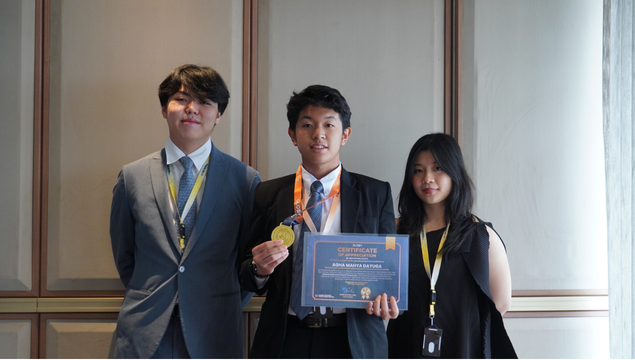

Pembimbing
Guru Pembimbing
Mendampingi dan membimbing pengembangan BeFAST.
Gerakan literasi finansial anak muda
Kelola uang jajan harian tanpa pusing ngetik manual. Ucapkan transaksimu, pantau saldomu, dan mulai kebiasaan finansial yang sehat dari sekarang.


Digunakan puluhan pelajar
untuk literasi keuangan

100% Gratis
Tanpa langganan bulanan
Catatan Otomatis
+ Rp 25.000
Tentang Kami
Kami sering melihat teman-teman di sekitar kami yang kehabisan uang jajan sebelum waktunya karena malas mencatat. Masalahnya selalu sama: aplikasi keuangan yang ada terlalu kaku dan ribet digunakan.
Dari keresahan itu, BeFAST lahir. Kami menciptakan alat yang menyesuaikan dengan gaya hidup pelajar—hanya perlu berbicara dengan bahasa tongkrongan (ceban, gocap, dll), dan AI akan membereskannya.
"Generasi muda tidak butuh tabel akuntansi yang rumit. Mereka hanya butuh asisten pintar yang mau mendengar dan mencatat dengan cepat."
— Visi BeFAST Team
Fitur Unggulan
Cukup ucapkan transaksimu tanpa perlu mengetik manual.
Mengerti istilah ceban, gocap, gopek secara instan.
Undo transaksi yang tak sengaja terhapus dengan aman.
Catat beberapa barang sekaligus dalam satu kalimat.
Visual chart yang tak menenggelamkan nominal kecil.
Unduh data keuangan utuh untuk laporan akhir bulan.
Di balik BeFAST
BeFAST dikembangkan oleh tiga pelajar dengan bimbingan guru, berangkat dari keresahan sederhana: mencatat keuangan seharusnya terasa mudah dan dekat dengan keseharian.
Pembimbing
Mendampingi dan membimbing pengembangan BeFAST.
Ketua Tim
Mencetuskan ide BeFAST dan memimpin tim.

Riset & Pengembangan
Meneliti kebutuhan pengguna dan mengembangkan solusi BeFAST.
Teknis & Produk
Menangani pemrograman serta desain UI/UX BeFAST.
Kata Mereka
"Biasanya malas mencatat pengeluaran harian. Di BeFAST tinggal ngomong sambil jalan, beres semua. Bahasa tongkrongan kayak ceban dan gocap pun langsung paham!"
Aris Setiawan
Pelajar SMK
"Fitur Undo 8 detiknya jenius banget. Pas lagi buru-buru terus salah pencet hapus, datanya langsung bisa balik seketika. Tampilannya juga clean banget!"
Nadia Faradila
Mahasiswi
"Akhir bulan tinggal sekali klik langsung jadi file Excel rapi. Sangat membantu memantau pos anggaran makan dan belanja biar nggak boncos di pertengahan bulan."
Bima Pratama
Freelancer Muda
Bantu Kami Berkembang
BeFAST selamanya gratis tanpa sistem paywall. Namun biaya server database (Supabase) tetap berjalan setiap bulannya. Dukunganmu sangat berarti bagi kelangsungan proyek ini.
Bebas Biaya Berlangganan
Dukung operasional developer independen secara sukarela.
Traktir via Trakteer →Punya kebingungan? Temukan jawabannya di bawah ini.
Ya, 100% gratis! Kami tidak menggunakan sistem paket berlangganan bulanan. Seluruh fitur (termasuk voice recognition dan ekspor Excel) bisa langsung kamu gunakan tanpa batas.
Kamu hanya perlu menekan tombol mikrofon di dashboard, lalu sebutkan transaksimu seperti biasa (misal: "Beli nasi goreng 15 ribu"). AI kami akan memproses nominal dan kategorinya, lalu menyimpannya secara otomatis ke database.
Sangat aman. Kami menggunakan sistem autentikasi dari Supabase. Data pengeluaranmu dilindungi oleh *Row-Level Security* (RLS), artinya hanya akun milikmu yang bisa membaca dan mengubah data transaksimu sendiri.
Tidak perlu! BeFAST berbasis web (Progressive Web App). Kamu cukup buka `befast.my.id` di browser HP-mu (Chrome/Safari), lalu tambahkan ke layar utama (Add to Home Screen) agar berfungsi persis seperti aplikasi asli.